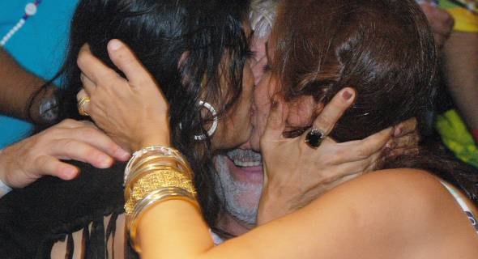

|
Brasil macunaímico Olavo de Carvalho
Inspirado em Antonio Gramsci e na Escola de Frankfurt, bem como nos ideais da nova civilização apregoada pela ONU, nosso governo tem feito o que pode para libertar dos grilhões do moralismo fundamentalista os pobres e oprimidos que há séculos padecem os horrores da repressão sexual. Já assinalei esse fenômeno, em artigo aqui publicado em 17 de julho de 2006 (http://www.olavodecarvalho.org/semana/060717dc.html): “Na página do Ministério do Trabalho, www.mtecbo.gov.br/busca/competencias.asp?codigo=5198, encontra-se um manual de ensino distribuído pelo governo brasileiro a interessadas e interessados em seguir carreira no ofício de prostituta ou prostituto. Muitos visitantes do site se escandalizam com o conteúdo das instruções. Eu não. Vejo nelas um auspicioso sinal de restauração da moralidade. Num país onde todos pontificam sobre o que ignoram, nossos governantes dão um exemplo de probidade intelectual lecionando matéria na qual têm a autoridade da longa prática.” Mas agora, graças aos bons préstimos de um leitor, descubro que a coerência petista na busca da democracia sexual é ainda mais profunda do que eu poderia ter imaginado. Se você duvida, faça o seguinte experimento. Dá um pouco de trabalho mas é tremendamente elucidativo. Primeiro, vá ao seu computador e abra a página oficial da Presidência da República, http://www.brasil.gov.br/governo_federal/estrutura/presidencia/. Chegando la, clique no link “Secretaria Especial de Políticas para as Mulheres”. Vai dar na página http://www.presidencia.gov.br/estrutura_presidencia/sepm/. Agora clique em “Links”, depois em “Governo Federal e Mulheres”, aí em “Mulheres” e por fim em “Grupo Transas do Corpo”. Pronto: você chegou ao site da loja de produtos eróticos Erosmania (http://www.erosmania.com.br/). Não tema: o estabelecimento deve ser confiável, já que o link vale como recomendação oficial. O produto em destaque na página chama-se “Anal Slim Jim”. É – quem diria? -- um pênis de borracha cor-de-rosa, com vibrador, de uns quinze centímetros de comprimento por dois e meio de largura. Não sei se a esta altura o emprego de instrumento tão útil já se disseminou entre os altos escalões da República, mas imagino que o sr. Presidente da República e seus ministros não seriam levianos ao ponto de pregar uma coisa e fazer outra. Não digo que o empreguem necessariamente em si próprios – isso é uma questão de preferência pessoal na qual não desejo interferir --, mas sempre haverá em torno pessoas amigas interessadas em beneficiar-se da oportunidade democraticamente oferecida a todos, ou todas, pela Secretaria Especial de Políticas para as Mulheres. Em caso de dificuldade no manejo do equipamento, a loja sugere o apelo ao lubrificante “Lubrigel Intimus”. Para maior esclarecimento, os visitantes da página poderão também adquirir ali filmes educativos como “O Estuprador de Coroas” e alguns de interesse médico, como “A Síndrome do Furor Uterino”. Um indício ainda mais eloqüente da fidelidade do PT à sua ideologia erótica foi dado aos eleitores, aliás em dose dupla, pelo governador da Bahia, Jacques Wagner. Depois de aparecer completamente bêbado num vídeo do youtube (http://video.google.com/videoplay?docid=-6212632340540114758&hl=en), o ativíssimo ex-ministro do Trabalho revela-se agora um pioneiro na aplicação prática dos princípios que orientam a reforma petista dos costumes. Nas fotos que acompanham esta matéria, ele é visto no “Expresso 2222” , o trio elétrico de Gilberto Gil, empurrando sua esposa Fátima para um ardente beijo lésbico na boca da esposa do ministro da Cultura, Flora Gil, diante de incontáveis e estupefatos eleitores. Vejam vocês. Em países atrasados, como os EUA, o pessoal reclama até quando estrelas do show business fazem essas coisas na TV. No Brasil, são as altas esferas da República que dão o exemplo, mandando às urtigas o moralismo vitoriano (eu ia quase esquecendo: moralismo vitoriano da Idade Média, não é mesmo?) e levando às últimas conseqüências o exercício público da democracia sexual. Para que ninguém suponha que a lição petista não frutificou em escala internacional, a coluna do Cláudio Humberto do último dia 8, sob o título “Deputados do Peru perdem a cabeça no Brasil”, publica as fotos da revista Caretas, aqui reproduzidas, que mostram dois deputados peruanos, Javier Velásquez e José Veja. Eles vieram em visita oficial à XXII Assembléia do Parlatino, dia 8 de dezembro, mas rapidamente assimilaram a filosofia política local e caíram na maior gandaia numa boate paulista. De volta ao seu país, onde ainda vigoram as leis bárbaras da Inquisição, os dois estão ameaçados de ter de responder à Comissão de Ética do parlamento peruano. Aqui, não. O máximo que vai acontecer ao governador Jacques Wagner é uma ressaca. Significativamente, o jornalista Merval Pereira, na sua última coluna em O Globo , comentando a morte de Jean Baudrillard, lembra que o sociólogo francês, em conversa que tiveram um ano atrás na conferência da Academia da Latinidade em Baku, capital do Azerbaijão, lhe falou do Brasil como "uma espécie de variação, de desvio em relação ao modelo internacional”. “Ele imaginava que o Brasil poderia constituir ‘uma espécie de santuário, uma bolsa de resistência contra estes modelos de civilização, por tudo aquilo que devia ser jogo, teatro, carnaval’.” Baudrillard “via a magia brasileira como uma espécie de utopia realizada sobre a Terra", mas acrescentava, cético, que ‘a utopia, quando já realizada, é um pouco perigosa’.” Um pouco perigosa? Que exagero! Que são cinqüenta mil homicídios anuais, em comparação com os prazeres que o sex lib petista promete aos sobreviventes? Logo após o assassinato do menino João Hélio, o colunista Diogo Mainardi propôs uma semana de luto nacional, ameaçando reacionariamente estragar os festejos carnavalescos. Graças à coragem cívica do governador Jacques Wagner, da Secretaria Especial de Políticas para as Mulheres, do ministro da Cultura e sua digníssima, esses arreganhos golpistas (é assim que se escreve?) não prevalecerão em terras brasileiras. Como dizia Dolores Ibarruri, No pasarán. Ou, parafraseando a campanha épica da Petrobrás, a gandaia é nossa.
 |

Home
- Informações
- Textos
- Links
- E-mail